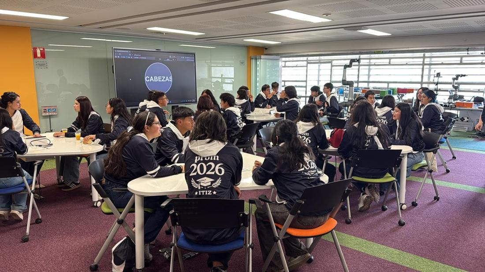

Visita del colegio técnico rural de Zipaquirá
Los estudiantes visitantes exploraron la ciencia detrás de las apuestas y cómo los eventos discretos se modelan matemáticamente.

La probabilidad y la estadística tienen aplicaciones mucho más profundas de lo que se cree; incluso los juegos que parecen puramente azarosos pueden ser descifrados mediante el rigor matemático.
En esta ocasión, los estudiantes visitantes exploraron la ciencia detrás de las apuestas, comprendiendo que eventos discretos —como el azar de una carta o el resultado de un dado— pueden modelarse matemáticamente para entender cómo se establece la ventaja de la casa. Como ingenieros industriales, una de nuestras mayores fortalezas es el análisis de fenómenos reales y su reinterpretación cuantitativa.
Nuestras técnicas de modelado trascienden el ámbito del azar: áreas estratégicas como el mercadeo, la producción y la logística representan nuestro principal campo de acción dentro de la ingeniería.
¿Quieres traer tu colegio o grupo al laboratorio?
Recibimos visitas guiadas donde los estudiantes resuelven retos reales de ingeniería industrial con robots, impresión 3D y realidad aumentada.